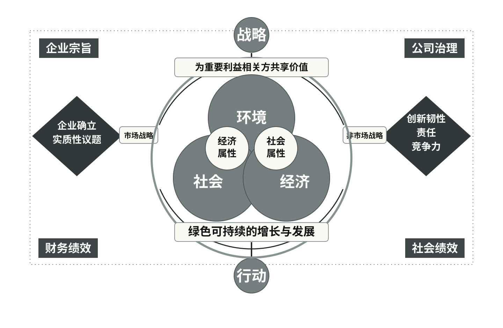

企业宗旨先于战略，并决定企业存在的社会理由
宗旨不是口号，而是企业选择经营领域、价值标准、战略方向和社会角色的根本依据。
宗旨不是口号，而是企业选择经营领域、价值标准、战略方向和社会角色的根本依据。
它能解决什么问题
企业面对多重议题时，靠什么保持长期选择的一致性？
宗旨为经营领域、思想、目标与战略提供根本依据，企业同时具有经济和社会属性。《可持续商业战略与实践》，第 27 页
为什么会出现这类问题
- 企业具有经济和社会二重属性
- 战略需要一个高于单项业务目标的价值坐标
“近年来关于企业宗旨的讨论，正成为各大上市公司、隐形冠军、行业领军者越来越关注的企业核心议题。他们认为，这是在日益复杂的营商环境中，事关企业生存和发展的根本命题。企业宗旨是指企业的根本性质和存在的理由，是关于企业存在的社会目的；…”《可持续商业战略与实践》，第 27 页
吕博士的推理逻辑
- 宗旨回答为什么存在
- 经营方针把宗旨转为决策原则
- 战略再据此选择做什么和如何做
“然而，企业经营者在推动可持续商业战略落地实施和价值创造过程中，仍面临很大的困惑和挑战，其中的关键原因是企业经营者及管理层的认知局限性，如果他们不能真心地认同可持续发展的必要性，企业变革就会缺少内驱力，行动必将流于表面，难以触及实质性的问题，这是造成可持续商业战略与实践与目标脱节的根本原因。”《可持续商业战略与实践》，第 152 页

由此得到的判断
“企业经营者在可持续发展已经成为时代主流、在不确定性、不稳定性、模糊性和复杂性已经成为常态化经营环境的挑战面前，应当如何思考、如何权衡、如何取舍?到底是抱着自我安慰的“先活着”的借口，保持目前发展模式，还是突破这种错误的活法儿，…”《可持续商业战略与实践》，第 154 页
如何进入企业实践
- 重写可检验的宗旨陈述
- 用宗旨筛选重大议题和业务机会
“批判性思维并非我们天生的特质，需要通过专业的训练和可靠的实践来培养。 缺乏批判性思维的企业经营者往往会盲目依赖权威或传统经验，难以揭示问题的真相、接近问题的实质，也很难找到真正有效的解决方案。实际上， 一切论证均包含根据、理据和结论，因此，要做到批判性思考，…”《可持续商业战略与实践》，第 156 页
适用条件与边界
宗旨必须进入决策和行为，不能用宏大叙事替代经营责任。
“西蒙 ·斯涅克提出的“黄金圈”法则是由三个圈层组成的思维和认知模式，最外圈层是针对事物表象的“做什么”( What), 中间圈层是针对实现目标途径的“怎么做”( How), 最里面中心圈层是针对动机目的或问题本质的“为什么做”( Why)。”《可持续商业战略与实践》，第 157 页
来源与页码
宗旨为经营领域、思想、目标与战略提供根本依据，企业同时具有经济和社会属性。
企业家需以批判性、结构化和系统性思维，从社会目的重新审视商业。